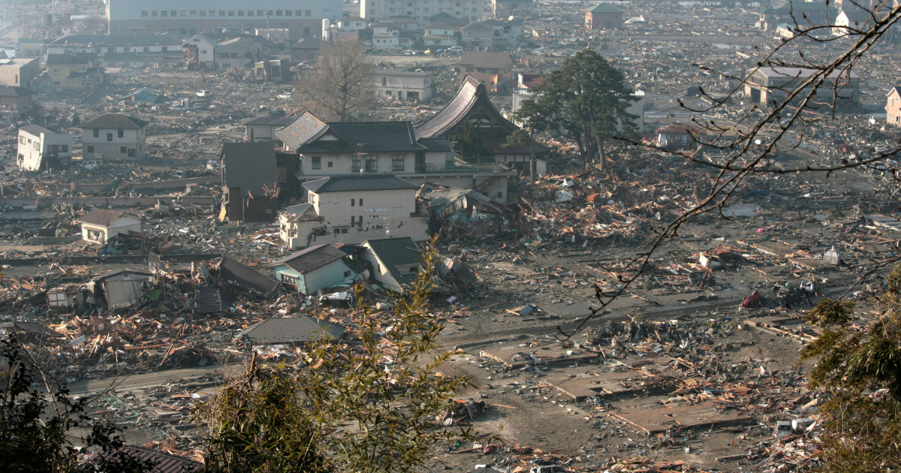
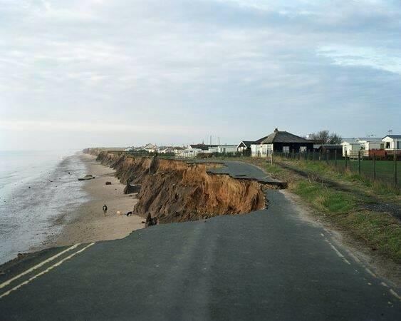
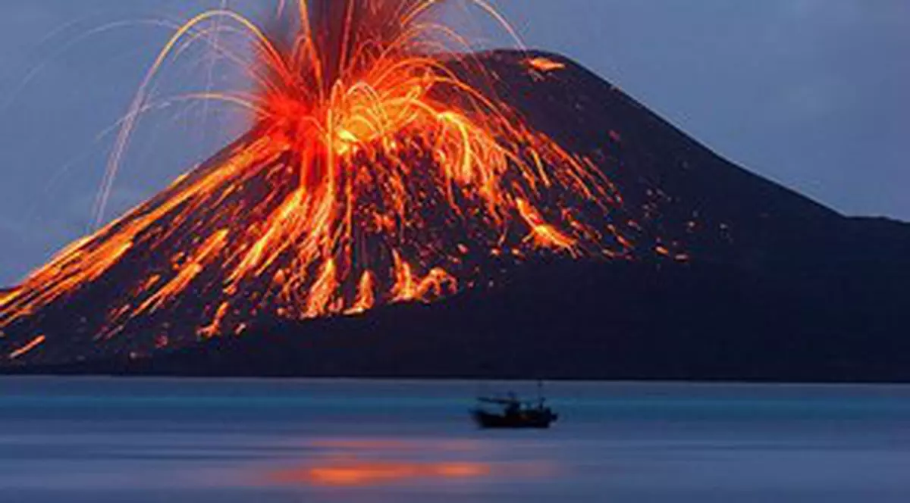
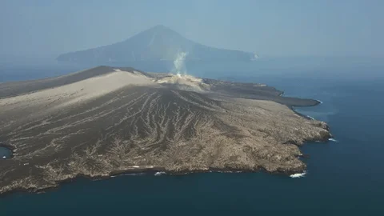
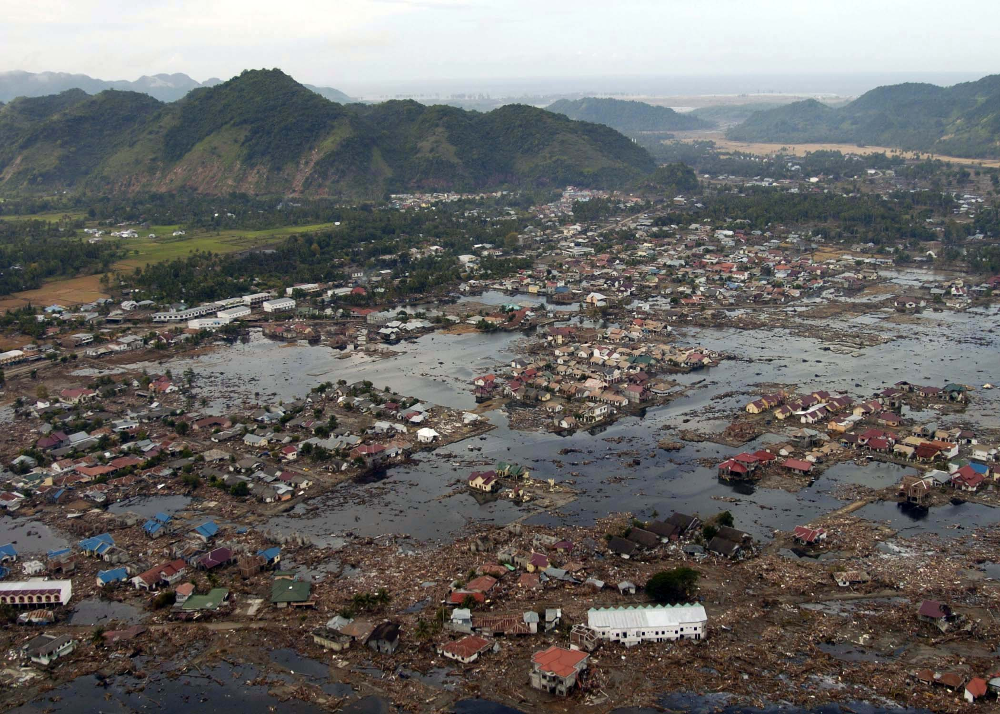
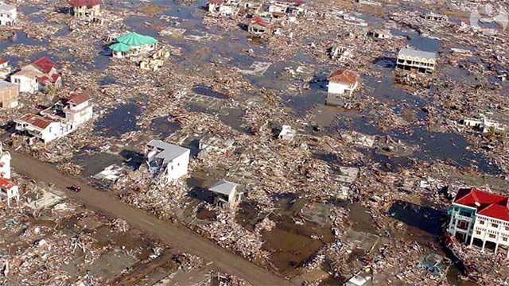
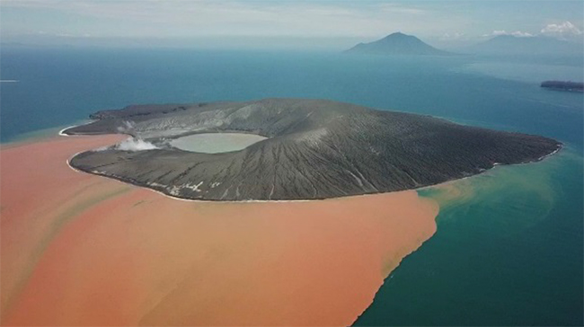

TSUNAMI
Forța Distructivă a Oceanelor
GEOGRAFIE · HAZARDE NATURALE
Forța Distructivă a Oceanelor
GEOGRAFIE · HAZARDE NATURALE
Tsunami (津波) este o serie de valuri marine de mare lungime de undă și energie, generate de perturbații bruște ale fundului oceanic sau ale unei mase mari de apă.
Cuvântul provine din japoneză: 「津」 tsu (port) și 「波」 nami (val) — literalmente „val de port".
Termenul popular „tidal wave" este incorect — tsunami-urile nu au nicio legătură cu mareele. Ele sunt generate exclusiv de perturbații geologice sau cosmice bruște ale masei de apă.

poza1.jpg
poza2.jpg
poza3.jpg




„Natura are puterea de a remodela lumea —
datoria noastră este să o înțelegem."